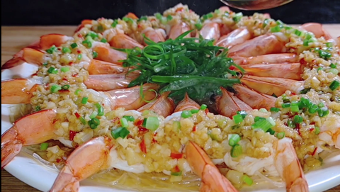

Home
rice

描述
这道菜将大虾的鲜美与蒜蓉的香味完美结合，粉丝吸收了虾的鲜味和蒜蓉的香味，口感爽滑，味道浓郁，是一道美味又营养的菜肴。
成分
- 大虾6只
- 龙口粉丝1小把
- 小米辣1个
- 白糖1茶匙
- 蚝油1汤匙
- 蒸鱼豉油1汤匙
- 食用油适量
- 盐少许
- 葱花少许
步骤
- 龙口粉丝用温水泡发，泡软后捞出沥干水分，铺在盘子底部。
- 大虾洗净，去头拔掉虾线，顺手把壳去掉，尾壳留着，在虾背开个大口子，把虾尾从背上穿过去，放在粉丝上备用。
- 大蒜切成蒜末，小米辣切成圈，放入碗中，加入白糖、蚝油、盐和一勺热油，搅拌均匀，制成蒜蓉酱。
- 把蒜蓉酱挨个放到粉丝和大虾上面。
- 锅中加水烧开，放入盘子，盖上锅盖蒸10分钟左右。
- 取出盘子，淋上一圈蒸鱼豉油，撒上葱花，再淋上热油激发出香味即可。